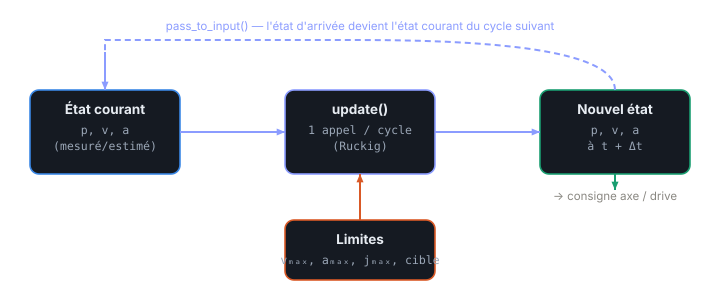

Chapitre 01
Générer une trajectoire… en ligne
Objectifs du chapitre
- Poser le problème : conduire un ou plusieurs axes d'un état courant à un état cible, en douceur et sous contraintes cinématiques.
- Distinguer la planification hors-ligne de la génération en ligne (OTG) et comprendre pourquoi l'en-ligne réagit à chaque instant.
- Identifier les entrées / sorties d'un générateur de trajectoire en ligne et sa boucle d'exécution cyclique.
- Comprendre la garantie de temps-optimalité et le rôle central du jerk.
1. Le problème
Un axe se trouve dans un certain état courant : une position p, une vitesse v, une accélération a. On veut l'amener vers un état cible — typiquement une nouvelle position, éventuellement avec une vitesse et une accélération d'arrivée imposées. Le tout doit se faire de façon fluide, sans à-coups qui usent la mécanique ou font vibrer la charge, et en respectant des limites cinématiques : vitesse maximale vₘₐₓ, accélération maximale aₘₐₓ, jerk maximal jₘₐₓ (la dérivée de l'accélération).
La difficulté n'est pas de trouver une trajectoire, mais d'en trouver une qui satisfasse ces limites en permanence, et surtout de pouvoir la reconsidérer si les conditions changent : nouvelle cible, obstacle détecté, perturbation sur l'axe. Sur une machine réelle, la consigne n'est jamais figée une fois pour toutes.
💡 Pensez à un ascenseur : il ne se contente pas d'aller du 2ᵉ au 5ᵉ étage. Il démarre en douceur, atteint une vitesse de croisière, puis freine progressivement — et si vous appelez un nouvel étage en cours de route, il recalcule tout sans s'arrêter brutalement. C'est exactement ce que fait un générateur de trajectoire en ligne.
2. Hors-ligne ou en ligne ?
Il existe deux grandes familles de générateurs.
Une planification hors-ligne calcule la trajectoire complète à l'avance, du départ jusqu'à l'arrivée. On obtient une courbe figée que l'on se contente ensuite de lire, échantillon après échantillon. C'est parfait quand tout est connu et immuable — mais dès qu'un événement survient (la cible bouge, un capteur déclenche), il faut relancer un calcul complet, ce qui prend du temps et introduit une latence.
Un générateur en ligne (OTG, Online Trajectory Generation) fait l'inverse : il recalcule la trajectoire à chaque cycle, en partant de l'état courant réel. À chaque tour, il ne produit qu'un pas — le prochain état — mais il le fait en tenant compte de la cible et des limites du moment.
💡 L'avantage décisif de l'en-ligne : la réaction instantanée. Une nouvelle cible ou une valeur de capteur qui change au cycle N est prise en compte dès le cycle N+1, sans replanification globale. C'est ce qui rend l'axe robuste aux perturbations et adaptable en temps réel.
3. Entrées et sorties
À chaque cycle, le générateur reçoit trois blocs d'information et produit un état.
- État courant : p, v, a (mesurés ou estimés).
- État cible : p_target, v_target, a_target.
- Limites : vₘₐₓ, aₘₐₓ, jₘₐₓ.
En sortie, un seul objet : le prochain état (p, v, a) à l'instant t + Δt, où Δt est la période du cycle. C'est cette nouvelle position qui devient la consigne envoyée à l'axe.

update() combine l'état courant et les limites pour produire le prochain état ; celui-ci alimente le drive et, via pass_to_input(), redevient l'état courant du cycle suivant.4. La boucle
Le fonctionnement est fondamentalement cyclique. À chaque tour :
- on appelle
update(input), qui renvoieoutput— le prochain état ; - on transmet
output.newPosition(et éventuellement v, a) à l'axe ; - on exécute pass_to_input : l'état d'arrivée de ce cycle devient l'état courant du cycle suivant.
Cette dernière étape est le cœur de la boucle : elle « avance » d'un pas dans le temps. Comme le montre la Figure 1.1, la sortie reboucle sur l'entrée. Tant que la cible n'est pas atteinte, update() retourne un résultat Working ; une fois l'état cible atteint dans les limites, il retourne Finished. On sait ainsi précisément quand le mouvement est terminé.
⚠️ Le pass_to_input doit repartir de l'état calculé par le générateur, pas de la position mesurée brute — sinon le bruit de mesure se réinjecte à chaque cycle et la trajectoire se met à trembler. On ne remplace l'état courant par la mesure que délibérément (recalage), pas par défaut.
5. La garantie : temps-optimale
Pour un mouvement état-à-état (d'un état courant vers un état cible, sans waypoints intermédiaires imposés), Ruckig ne se contente pas de fournir une trajectoire admissible : il fournit la trajectoire de durée minimale compatible avec les limites. C'est la propriété de temps-optimalité. Autrement dit, aucune autre trajectoire respectant vₘₐₓ, aₘₐₓ et jₘₐₓ n'atteint la cible plus vite.
∑ La durée totale d'un mouvement est la somme des durées de ses phases. Nous verrons au chapitre suivant qu'un profil limité en jerk se décompose en sept segments :
Ruckig cherche l'ensemble des tᵢ qui minimise T sous les contraintes cinématiques.
La clé de la fluidité tient en un mot : le jerk. En bornant la dérivée de l'accélération, on interdit les variations brutales de couple, on réduit les vibrations et on ménage la mécanique. C'est ce que nous détaillerons au chapitre 2 avec le profil en S.
6. Dans ruckig-scl
🔧 Dans ruckig-scl, toute la boucle est encapsulée dans un bloc fonctionnel à état, RuckigOtg, appelé une seule fois par cycle depuis un OB rapide (par exemple un OB à interruption cyclique). À chaque appel, il valide l'entrée, détecte un changement de cible, recalcule si besoin, avance d'un pas et évalue le résultat (Working / Finished).
Les données transitent par les UDT typeRuckigInput et typeRuckigOutput, en LREAL (équivalent du double C++) et en ARRAY[0..DOF_MAX-1] pour gérer plusieurs axes. La sortie output.newPosition[] devient la consigne du drive.
// SCL — appel typique dans un OB cyclique rapide
"RuckigOtg_DB"(
input := #trajInput, // p, v, a courants + cible + limites
cycleTime := #dt, // période de l'OB (s)
output => #trajOutput); // prochain état à t + dt
// La nouvelle position part vers l'axe
#axisSetpoint := #trajOutput.newPosition[0];Récapitulatif
- Le problème : amener un ou plusieurs axes d'un état courant (p, v, a) à une cible, en douceur, sous les limites vₘₐₓ / aₘₐₓ / jₘₐₓ.
- Hors-ligne = trajectoire figée calculée à l'avance ; en ligne (OTG) = trajectoire recalculée à chaque cycle depuis l'état courant → réaction instantanée et robustesse.
- Entrée = état courant + état cible + limites ; sortie = le prochain état à t + Δt.
- La boucle :
update()→ nouvel état →pass_to_input. Résultat Working tant que la cible n'est pas atteinte, Finished ensuite. - Pour un mouvement état-à-état, la solution est temps-optimale ; la fluidité vient de la limitation du jerk (chapitre 2).
- Dans
ruckig-scl: le FBRuckigOtgappelé 1×/cycle dans un OB rapide,newPosition[]→ drive.